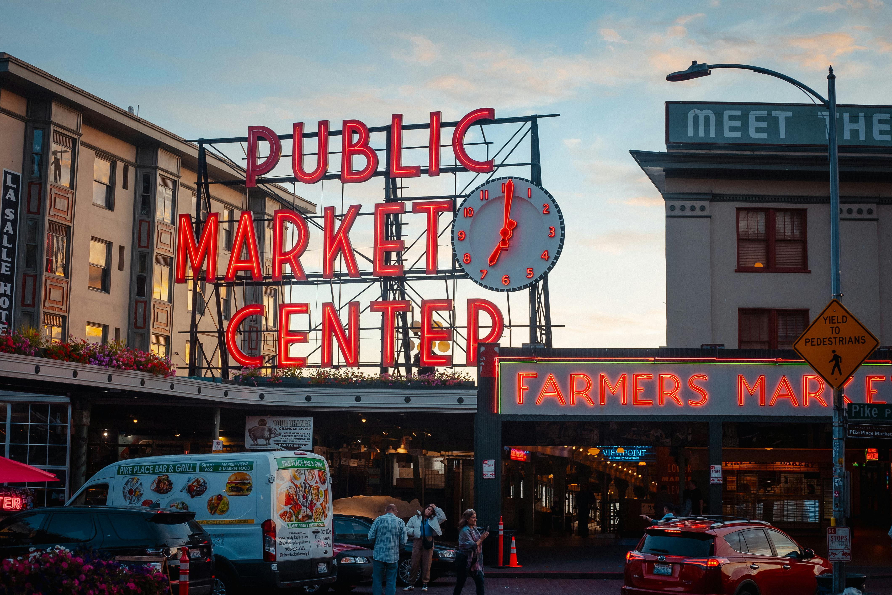
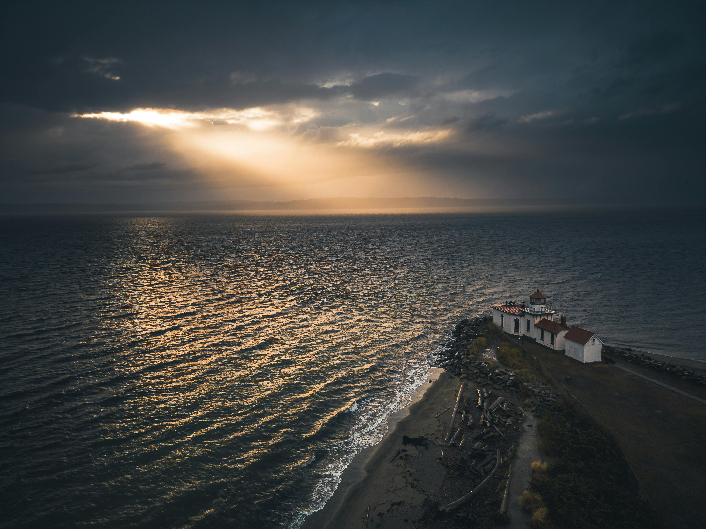
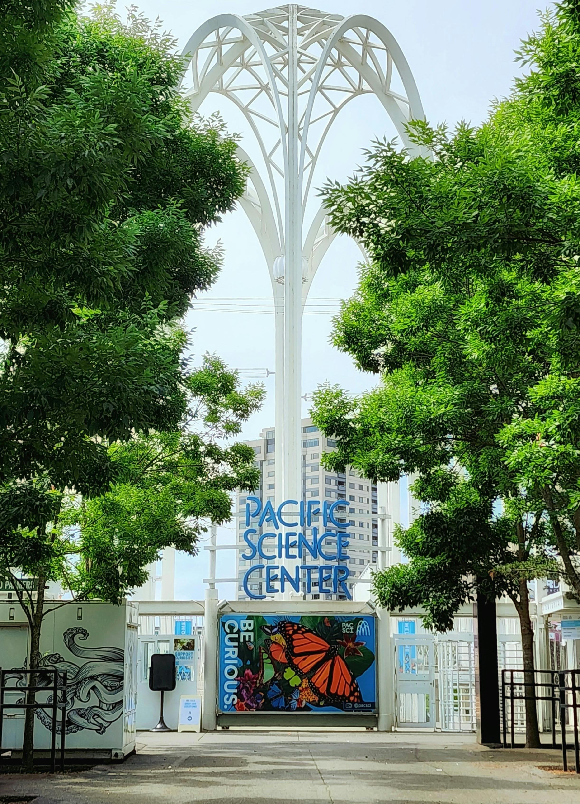

Seattle, the Emerald City, beckons visitors with a unique blend of urban excitement and natural beauty. Nestled between the Puget Sound and the Cascade Mountains, the city offers stunning views, from the iconic Space Needle to the majestic Mount Rainier. Seattle's vibrant culture is reflected in its world-class museums, thriving music scene, and diverse culinary offerings. Whether you're exploring the bustling Pike Place Market, kayaking on Lake Union, or hiking in the nearby mountains, Seattle has something to captivate every traveler. It's no wonder this dynamic city consistently ranks as a favorite destination for visitors from around the globe.
You can get guided tours where you are taught about the history of the city.
My favorite part of the underground is the crapper. It sounds vulgar, but it's a toilet.

Iconic Pike Place Market Sign in Seattle at Dusk by Josh Hild.
wassup osaka

Sunlight Piercing through Storm Clouds over the Discovery Park Lighthouse by Willian Justen de Vasconcellos.
Discovery Park is a must-go escape in Seattle. It's a huge, sprawling park right on the Puget Sound. You feel like you're miles away from the city even though you're right there. It's extremely diverse with dramatic cliffs overlooking the water, peaceful forests to wander through, and a beach with a lighthouse. It's perfect for a long walk, or just sitting on a bench watching the ferries go by and taking in the incredible views of the Olympic mountains. Plus, it has a rich history, with the old military buildings still scattered around, adds another layer of interest. It's just a really special place that offers something for everyone.

Entrance to the Pacific Science Center, Seattle, Washington, USA by Coral Grandbois.
The Pacific Science Center is a great place to spend the day, especially for kids. We've gone several times, and there's always something new to discover. From the interactive exhibits where you can learn about physics and biology, to the planetarium that takes you on a journey through the stars, it's both educational and super fun. We are usually mesmerized by the butterfly exhibit. It's a great place to spark curiosity and get kids excited about science.